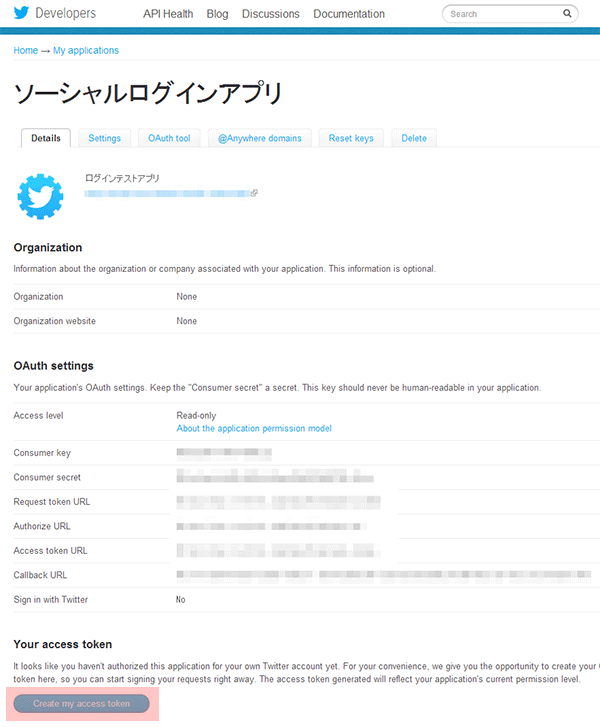

１．必要なファイル
- twitter/getToken.php
- twitter/callback.php
- twitter/twitteroauth/twitteroauth.php
- twitter/twitteroauth/OAuth.php
この中で実際に編集するのは、getToken.phpとcallback.phpです
facebookのソーシャルログインよりやや複雑なのでfacebookを先に作成するのをおすすめします
この中で実際に編集するのは、getToken.phpとcallback.phpです
facebookのソーシャルログインよりやや複雑なのでfacebookを先に作成するのをおすすめします
ソーシャルログインの実装にはtwitterのアプリを用意する必要があります
https://dev.twitter.com/にアクセスします
右上にあるSign inをクリックし、Twitterアカウントでログインします
先ほどのSign inの位置からMy applicationsをクリックします
ログイン後の画面です
Create a new applicationをクリックします
| Name: | アプリの名前 |
|---|---|
| Description: | アプリの説明 |
| Website: | アプリを使用するサイトのＵＲＬ |
| Callback URL: | 今回必須。callback.phpのＵＲＬを入力します http://xx.xxx.jpというサイト名の場合、http://xx.xxx.jp/twitter/callback.phpとなります |
aアプリの設定が表示されたら、画面下部にあるCreate my access tokenをクリックしてTwitter側の準備は終了です

Create my access tokenがクリックされた後はこのようになります
getToken.phpはTwitterのログインボタンを押して、処理をするファイルのひとつです
書き換えていく部分は2-6で表示されている、
・Consumer Key
・Consumer secret
・Callback URL
をそれぞれ入力します
getToken.phpと同じように、Consumer KeyとConsumer secretを入力します
次にリダイレクト先（実際にTwitterのユーザー名等を表示させるページ）を指定します
リダイレクト先ページを用意し、以下のＰＨＰを書き込みます
セッションを利用しているので他のページへ移動しても表示させることが出来ます
<?php session_start(); echo "ようこそ" . $_SESSION['username']."さん！<br />"; echo "<img src=" . $_SESSION['picture'].">"; ?>
getTokes.phpにアクセスすると、許可を求められるページが表示されます
承認するとリダイレクトし、自分のサイトにユーザー名とプロフィール写真が表示されれば完成です！
異なるＵＲＬを入力すると、許可後に画面が真っ白になってうまくリダイレクトされません
TwitterのソーシャルログインはShift-jisでないと画面が真っ白のまま動かないので、
そのようなときは文字コードを確認してみましょう
動作環境
動作OS：Windows 7
ブラウザ:chorome/opera/firefox/safari/IE7.8.9
PHP:PHP 5.2.17 (CGI版)
twitteroauth バージョン0.2.0仕様
Twitter API V1.1